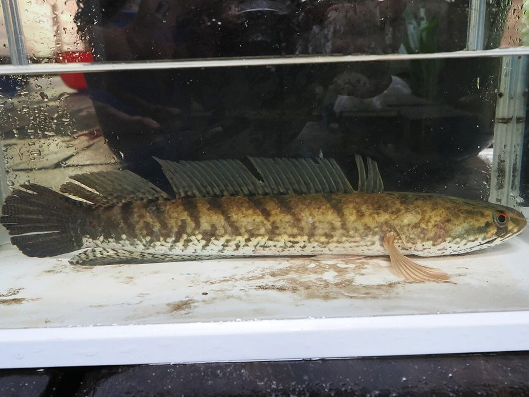

सौरSnakehead Murrel
Channa striata · Channidae · FSH-0003

- Scientific name
- Channa striata (Bloch, 1793)
- Family
- Channidae
- Hindi
- सौर
- Status here
- native
- IUCN
- LC
When to look कब देखें
Present all year.
सौर / Snakehead Murrel
Channa striata (Bloch, 1793) — Channidae
सौर — पूर्वी उत्तर प्रदेश के तालाबों, दलदलों और धान के खेतों में पाई जाने वाली एक अत्यंत लोकप्रिय शिकारी मछली। इसका बेलनाकार लंबा शरीर और सांप जैसे चपटे सिर पर स्थित शल्क (scales) इसे 'स्नेकहेड' (सांप-सिर) का नाम देते हैं। इसके शरीर के किनारों पर काले रंग की वी (V) आकार की धारियां होती हैं। एक विशेष वायु-श्वसन अंग की मदद से यह हवा से ऑक्सीजन ले सकती है, जिससे यह बहुत कम ऑक्सीजन वाले गंदे पानी और कीचड़ में भी लंबे समय तक जीवित रह सकती है। यह अपने स्वादिष्ट और कम काँटों वाले मांस के लिए बाज़ारों में ऊँचे दामों पर बिकती है।
Quick Identification त्वरित पहचान
| Feature | Description |
|---|---|
| Form | Elongated, cylindrical body, compressed towards the tail; head is broad and flattened like a snake |
| Coloration | Dark greyish-brown to black on the back; sides with 10–12 distinct oblique chevron-like (V-shaped) dark bands; belly white |
| Fins | Long, continuous single dorsal fin (38–43 rays) and anal fin (23–27 rays) without spines; pectoral fins rounded |
| Mouth | Large, wide, terminal mouth, with the lower jaw slightly protruding; armed with sharp teeth |
| Breathing | Access to atmospheric air; rises periodically to the water surface to gulp air |
Field tip: Look for an elongated fish with a flat snake-like head and prominent dark V-shaped stripes running down its sides. If handled, it has a slippery mucus layer but thick scales. It is often seen rising to the surface to gulp air in stagnant village ponds.
Morphology आकारिकी
Biometrics (typical measurements in Gangetic plain populations):
| Measurement | Range |
|---|---|
| Standard length (SL) | 30–60 cm |
| Total length (TL) | 35–90 cm |
| Weight | 500–2000 g |
Body: Elongated, cylindrical anteriorly, becoming laterally compressed towards the tail. The head is broad, depressed, and covered with large, plate-like scales, resembling the head of a snake.
Coloration: The dorsal surface is dark grey-green or blackish-brown. The sides are marked with a series of dark, backward-directed chevron-like stripes. The ventral side (belly) is a solid yellowish-white.
Fins: The dorsal fin is long and extends along most of the back, containing 38–43 soft rays. The anal fin is also long with 23–27 soft rays. Both fins are free from spines. The tail fin (caudal fin) is rounded.
Mouth & Teeth: The mouth is large and terminal. Both the jaws and the palate (vomer and palatine bones) are lined with small cardiform teeth and intermixed with larger, sharp canines, adapted for holding slippery prey.
Air-Breathing Organ: Possesses a pair of suprabranchial cavities located above the gills. These cavities are lined with a highly vascularized epithelial membrane, enabling the fish to breathe atmospheric oxygen and survive in hypoxic or drying mud pools.
Ecological Role पारिस्थितिक भूमिका
Apex predator. Channa striata is a dominant carnivorous fish in freshwater marshes and flooded crop fields. It preys on smaller fish, frogs, tadpoles, crabs, and aquatic insects, playing a crucial role in maintaining the balance of wetland communities.
Hypoxia tolerance. Its ability to breathe air allows it to occupy oxygen-depleted niches (such as weed-choked or drying ponds) that are uninhabitable for carp species like Rohu and Catla, serving as the top predator in these harsh environments.
Parental care. Unlike many fish species, parent murrels show high parental investment. They build circular nests in weeds and guard the floating eggs and the orange-colored fry from predators, which increases offspring survival.
Life Cycle / Phenology जीवन चक्र
- Breeding season: June to August, matching the arrival of the monsoon rains and the flooding of low-lying plains.
- Nesting: The breeding pair clears a circular area in dense submerged weeds to construct a nest. The female lays floating orange-yellow eggs which rise to the surface.
- Guard duty: Both parents guard the nest and swim with the young school of orange fry (kids) until they grow to about 5 cm in length.
- Dry season survival: When seasonal ponds dry out in summer (April–June), the fish burrows into the wet bottom mud, breathing air and remaining dormant until the rains return.
Host Plants or Prey आहार
Primary prey items:
- Smaller fish (minnows, Puntius spp.).
- Frogs and tadpoles.
- Freshwater crabs (Barytelphusa guerini, CRU-0002) and river prawns.
- Aquatic insects (beetles, dragonflies, and bug larvae).
Predators / Natural Enemies शत्रु
- Waterbirds — Storks, Pond Herons (Ardeola grayii, BRD-0004), and Kingfishers prey on juveniles.
- Otters and Water Snakes — Hunt adults in streams and marshes.
- Humans — Heavily targeted by anglers and net fishermen.
Agricultural / Human Relevance कृषि प्रासंगिकता
Prized food fish. Locally known as Saur (सौर), it is one of the most popular and highly valued freshwater fish in Basti district. The flesh is white, firm, almost boneless, and has a mild, sweet flavor, making it a premium choice in local markets.
Fishing methods. Caught using a variety of local techniques:
- Hook-and-line angling: Using live frogs or earthworms as bait.
- Mud-fishing: Hand-collecting from the thick mud of drying ponds in early summer.
- Cast nets (Jal): Used in shallow marshes during the monsoon.
Aquaculture. Grown in agricultural ponds. However, because of its highly predatory nature, it cannot be easily stocked with young carp unless they are already large enough to avoid being eaten.
Expected Locally स्थानीय रूप से अपेक्षित
Not a field record. Written from published accounts for eastern Uttar Pradesh. No confirmed local sighting yet — if you have seen it, that is what the atlas needs.
अभी तक स्थानीय पुष्टि नहीं। यह विवरण प्रकाशित स्रोतों से है, किसी अवलोकन से नहीं।
Commonly found in the natural seasonal wetlands (chaurs), roadside ditches, and drainage canals of Basti. During the monsoon, they frequently enter flooded rice paddies to breed. Anglers sitting along canal banks trying to catch Saur using bamboo rods are a very common sight in Basti's rural areas in July and August.
Distribution वितरण
Global range: Native across South and Southeast Asia, including Pakistan, India, Nepal, Bhutan, Bangladesh, Sri Lanka, southern China, and Southeast Asia.
In India: Distributed throughout the plains and low-elevation waters of all states and union territories.
In Uttar Pradesh: Abundant and widespread in all river systems, canals, swamps, and village ponds.
In Basti district / eastern UP: Highly common resident in all natural wetlands, oxbow lakes, and seasonal marshes.
Range notes: No significant range changes documented.
Research Questions शोध प्रश्न
Anyone can investigate these | कोई भी इन प्रश्नों की जाँच कर सकता है
- How long can a mature Saur survive in drying mud under village summer conditions in Basti? / गर्मियों में बस्ती के गाँव की परिस्थितियों में एक वयस्क सौर मछली गीली मिट्टी में कितने समय तक जीवित रह सकती है? — Observe and record survival in drying pools.
- What is the average number of orange fry in a school guarded by a pair of Saur? / सौर के जोड़े द्वारा संरक्षित बच्चों (फ्राई) के झुंड में उनकी औसत संख्या कितनी होती है? — Count fry in 5 different nesting pools.
- What percentage of the diet of Saur in paddy fields consists of crop-damaging insect pests? — Perform stomach analysis on fish caught in paddies.
- Do Saur show a preference for nesting in native weeds over invasive water hyacinth mats? / क्या सौर आक्रामक जलकुंभी की तुलना में देशी जलीय घास में घोंसला बनाना अधिक पसंद करती है? — Map nest locations in mixed-weed ponds.
- How does the presence of Saur affect the growth and survival of Catla fry in the same pond? — Compare survival rates in shared vs. separated ponds.
Similar Species मिलती-जुलती प्रजातियाँ
| Species | How to tell apart | हिंदी |
|---|---|---|
| Great Snakehead (Channa marulius) | Grows much larger (up to 1.8 m); has a distinct black spot ringed with orange (ocellus) on the tail fin | भौरा — पूंछ पर आंख जैसा निशान |
| Spotted Snakehead (Channa punctata) | Much smaller (under 25 cm); olive-green with black dots; lacks chevron bands | फूल-सौर — छोटा आकार, धब्बेदार शरीर |
| Walking Catfish (Clarias batrachus) | Lacks scales; possesses 4 pairs of long feelers (barbels) around the mouth; has sharp poisonous spines | मांगुर — बिना शल्क की मूंछदार मछली |
Field rule: Elongated cylindrical body with a flat snake-like head, chevron-shaped dark bands on the sides, white belly, and absence of tail ocellus identify Channa striata.
Taxonomy & Classification वर्गीकरण
Original description. Marcus Elieser Bloch described the Snakehead Murrel as Ophicephalus striatus in 1793 in his work Naturgeschichte der ausländischen Fische (Vol. 7, p. 141). The type locality is Malabar, India. The genus name Channa is derived from the Greek channe (wide-mouthed fish). The specific name striata refers to the striped appearance of the body.
Subspecies. Monotypic — no subspecies are currently recognised.
Family and order placement. Placed in the order Perciformes (recently placed in Anabantiformes by some authorities), family Channidae. Channidae is a family of air-breathing carnivorous freshwater fishes native to Africa and Asia.
Phylogenetic notes. Taxonomic studies indicate that Channa striata belongs to a species complex with several closely related lineages that are currently under revision.
IUCN status rationale. Listed as Least Concern (LC). The species is highly abundant, widely distributed, and has stable wild populations, despite heavy exploitation for food.
Photo Gallery फोटो गैलरी
References संदर्भ
- Bloch, M.E. (1793). Naturgeschichte der ausländischen Fische. Vol. 7. Berlin, p. 141.
- Day, F. (1878). The Fishes of India. Bernard Quaritch, London.
- Talwar, P.K. & Jhingran, A.G. (1991). Inland Fishes of India and Adjacent Countries. Vol. 2. Oxford & IBH Publishing, New Delhi.
- Courtenay, W.R. & Williams, J.D. (2004). Snakeheads (Pisces, Channidae) — A biological synopsis and risk assessment. U.S. Geological Survey Circular, 1251, 1–143.
- Zoological Survey of India (ZSI) — Freshwater Fish of Uttar Pradesh.
- GBIF Occurrence Data — Channa striata, Uttar Pradesh (2010–2025).
Source file: species/fauna/fish/snakehead_murrel.md